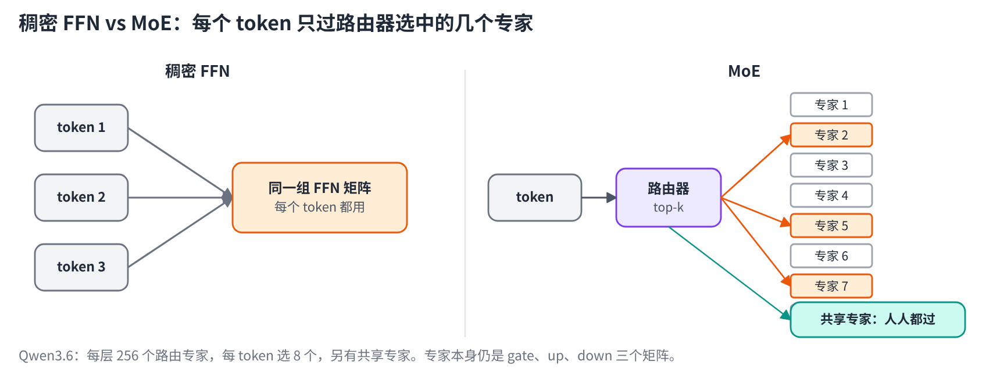
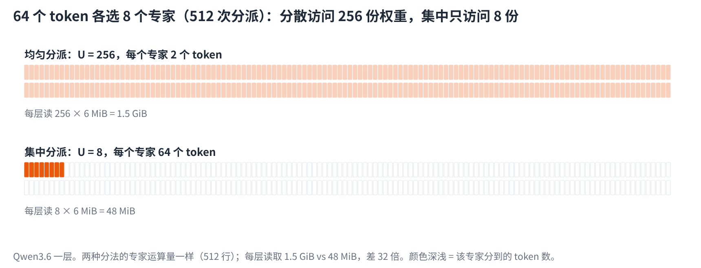
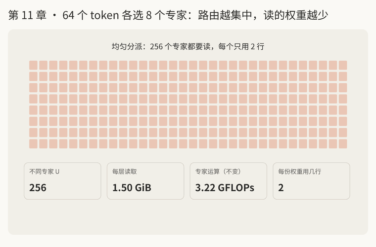

第 11 章 · MoE：专家路由与批内权重复用
本地运行
git clone https://github.com/wikieden/ai-infra-from-constraints
cd ai-infra-from-constraints/code/notebooks
pip install jupyterlab torch numpy
jupyter lab ch11_moe.ipynb也可以下载后直接用 VS Code 打开 .ipynb 运行。需要 GPU 的章节在 Colab 里选「代码执行程序 → 更改运行时类型 → GPU」。
本章回答：MoE 怎么让"模型存了多少参数"和"一个 token 用多少参数"分开？同样的专家计算量，为什么权重读取能差 32 倍？共享专家和潜空间专家又改变了什么？
讲解日期：2026-11-24 · 上一章：第 10 章 KV 怎么变小 ② · 下一章：第 12 章 网络形状
对应原文：materials/ai-infra-book/manuscripts/02-模型架构.md§2.4 L524–L586（例题 2-4、图 2-23）
本章缩写：AF = Attention–FFN 分离（注意力与前馈分开执行）· BF16 = Brain Float 16（Google Brain 提出的 / 浮点 / 16 位）· FFN = Feed-Forward Network（前馈 / 网络）· MoE = Mixture of Experts（混合 / 专家）· SwiGLU = Swish-Gated Linear Unit（Swish 门控 / 线性 / 单元）。全部缩写见 缩写与术语表
第 09、10 章让上下文状态变小。本章看另一大块数据：权重。稠密 FFN 每个 token 都用同一组矩阵；MoE 把参数分给很多个专家，每个 token 只用其中几个。
讲解
第一步：路由器挑专家：存得多、用得少（2026-11-24）
类比：一家大医院有 256 个专科医生，每个病人只挂 8 个号。 医院养的医生多（存的参数多），但每个病人只占用其中 8 个人的时间（激活的参数少）。
原文 L532：一个 MoE 分支的流程：
- 路由器给每个专家打分；
- 选分数最高的 \(k_{\mathrm{top}}\) 个专家（top-k）；
- 把 token 送进选中的专家，每个专家还是 gate、up、down 三个矩阵（第 07 章的 SwiGLU）；
- 按路由权重把输出加起来；有共享专家时，所有 token 再过一遍共享分支。
公式（原文 L538）：路由专家总数 \(E\)，每 token 选 \(k_{\mathrm{top}}\) 个，每个专家 \(N_e\) 个参数：
- 加大 \(E\)：可选的参数变多，单 token 运算不变。
- 加大 \(k_{\mathrm{top}}\) 或专家尺寸：单 token 运算才变多。
例子（原文 L534–L538）：Qwen3.6-35B-A3B，40 层，隐藏维度 2048，每层 256 个路由专家、每 token 选 8 个，专家中间维度 512，另有共享专家。
| 量 | 算式 | 值 |
|---|---|---|
| 一个专家 \(N_e\) | \(3 \times 2048 \times 512\) | 3,145,728（BF16 6 MiB） |
| 每层全部路由专家 | \(256 \times 6\) MiB | 1.5 GiB |
| 一个 token 选中的 8 个 | \(8 \times 6\) MiB | 48 MiB |
| 全模型文本参数 | — | 约 346.6 亿（BF16 约 69.3 GB）；名字里的 A3B = 每 token 激活约 30 亿 |

图 11-1 · 左：稠密 FFN，所有 token 用同一组矩阵。右：MoE，路由器给每个 token 选 \(k_{\mathrm{top}}\) 个专家，再加一条所有 token 都过的共享专家。
补基础：MoE 的训练、负载均衡损失见《超越 Transformer》目录的 MoE 阶段。
一句话：MoE 让"存多少参数"（\(EN_e\)）和"每 token 用多少参数"（\(k_{\mathrm{top}}N_e\)）分开调整。
第二步：同样的计算量，权重读取能差 32 倍（2026-11-24）
类比：64 个病人各挂 8 个号。 如果大家挂的号分散在全部 256 个医生那里，256 个医生都要上班（每人只看 2 个病人）；如果大家都挂同一组 8 个医生，只需要 8 个医生上班（每人看 64 个病人）。看病的总次数一样，开门上班的医生数差 32 倍。
公式（原文 L551）：本批实际访问的不同专家数为 \(U\)，专家 \(e\) 收到 \(t_e\) 个 token，不丢弃 token 时 \(\sum_e t_e = B\,k_{\mathrm{top}}\)：
- 运算量按"分派了多少行"算，和路由怎么分无关。
- 读取量按"读了几份不同的专家权重"算，取决于路由分得多散。
例题 2-4（原文 L544–L554）：Qwen3.6 的一层，\(B = 64\) 条请求各 decode 一步，每 token 选 8 个专家，共 512 次分派。
| 路由情形 | 访问的不同专家 \(U\) | 每专家 token 数 | 每层路由专家读取 |
|---|---|---|---|
| 均匀分到 256 个 | 256 | 2 | 1.5 GiB |
| 全部集中到同一组 8 个 | 8 | 64 | 48 MiB |
40 层合计：全部路由专家存 60 GiB；集中路由每批只读 1.875 GiB。

图 11-2 · 512 次分派，两种分法的专家计算量相同；但一份专家权重被多少行用，差了 32 倍。
代价也是两面的（原文 L565）：分散时要执行很多"只有 2 行输入"的小矩阵乘法，权重复用低、计算效率也低；集中时矩阵大、效率高，但真实路由由模型决定，不能随意集中（第 9 章讲专家放置和负载均衡）。
整模型对比（原文 L567）：Qwen3.6 在 8K 上下文、\(B = 1\) 的一步 decode 约 7.33 GFLOPs，比 Qwen3-8B 的 20.0 GFLOPs（第 07 章）还少：主干更窄（2048 维）、30 层线性注意力、MoE 只算选中的专家和共享分支。
一句话：MoE 的运算量按分派行数算，读取量按访问的不同专家数算；batch 里的路由越分散，读的权重越多、每份权重被复用得越少。
第三步：共享专家与潜空间专家（2026-11-24）
类比：医院里除了专科医生，还有一个所有病人都要过的分诊台（共享专家）；有的专科先把病历摘要一下再看（潜空间），看得快，但多了摘要和还原两步。
公式（原文 L577）：共享专家 \(N_s\) 个参数，处理本次全部 \(m\) 个 token：
decode 时 \(m = B\)；prefill 时 \(m\) 是本次所有输入 token。
例子（原文 L575–L579）：
| 模型 | 路由专家 | 每 token 选 | 共享专家 | 单个路由专家 |
|---|---|---|---|---|
| Qwen3.6-35B-A3B | 256 | 8 | 有 | \(3 \times 2048 \times 512 = 3{,}145{,}728\) |
| DeepSeek V4-Flash | 256 | 6 | 1 个 | \(3 \times 4096 \times 2048 = 25{,}165{,}824\)（前 3 层哈希路由，之后评分路由） |
| Kimi K3 | 896 | 16 | 有（直接处理主干表示） | 先从 7168 维降到 3584 维潜空间，再过中间维度 3072 的专家，再投影回主干 |
潜空间专家：降维让每个路由专家的矩阵变小，但多了进入和离开潜空间的两次投影。
跨卡（原文 L581）：专家分在不同卡上时，要把 token 发到专家所在的卡，算完再合并；通信量取决于专家放在哪、输入在哪（第 6 章、第 9 章）。
场景代码：Hugging Face 风格的 MoE 层，路由的核心就是 topk，再按专家分组执行（简化版，省略共享专家和负载均衡）：
import torch
import torch.nn.functional as F
def moe_forward(x, router, experts, k=8): # x: [m, d]
probs = F.softmax(router(x), dim=-1) # [m, E]：给每个专家打分
w, idx = probs.topk(k, dim=-1) # 每个 token 选 k 个专家
out = torch.zeros_like(x)
for e in idx.unique(): # 只执行被选中的专家：U = 不同专家数
rows, slot = (idx == e).nonzero(as_tuple=True) # t_e 个 token 送进专家 e
out[rows] += w[rows, slot, None] * expertse
return out
一句话：共享专家对所有 token 都算，路由专家只算分到的 token；潜空间专家用两次额外投影换更小的专家矩阵。
动画演示：64 个 token 各选 8 个专家，路由越集中，读的权重越少

可交互版：animations/11-moe.html（滑块：路由集中度，从完全均匀到全部集中在 8 个专家；固定 Qwen3.6 的一层、\(B = 64\)、\(k_{\mathrm{top}} = 8\)）。
怎么看：
- 一行 256 个小格是 256 个路由专家，颜色越深表示分到的 token 越多（第二步）；
- 三个数：访问的不同专家 \(U\)、每层读取量 \(6\ \text{MiB} \times U\)、专家运算量（一直不变）；
- 播放时从均匀（\(U = 256\)）逐步集中到 8 个专家：读取量从 1.5 GiB 降到 48 MiB，运算量不动；
- 右下角显示"平均每份专家权重被几行用"：从 2 涨到 64。
练习与作答记录
题 1（第一步）：一个 MoE 层有 64 个路由专家，每 token 选 4 个，隐藏维度 1024，专家中间维度 768。一个专家多少参数？每层路由专家共多少参数？一个 token 的专家运算约多少 FLOPs？
作答记录：（待作答）
题 2（第二步）：还是题 1 的层，BF16，batch 有 16 个 token。均匀分派时最多访问多少个不同专家？如果全部集中到同一组 4 个专家呢？两种情况的专家运算量和权重读取量各是多少？
作答记录：（待作答）
题 3（第三步）：上面的层再加一个共享专家（中间维度 768），prefill 一条 1000 个 token 的请求，共享专家这一层要多少 FLOPs？为什么 prefill 时共享专家的运算量要按 1000 行算？
作答记录：（待作答）
原书练习 2-6（L583–L585：\(B = 64\) 两种分派的 \(t_e\)、FLOPs 与读取，专家总数减半、宽度加倍、选中数减半）。想多练可以做。
口诀
医生养得多，病人挂得少；
算量看分派，读量看开了几扇门；
分诊台人人过，专科先摘要再还原。
本章复习卡片
I38（MoE 的保存与激活）、I39（\(F_{\mathrm{expert}}\) 与 \(R_{\mathrm{expert}}\)，例题 2-4 的 32 倍）、I40（共享专家与潜空间专家）。练习做完后，按答错、卡住的地方再补。
附录 · 延伸阅读
留给以后深入学习用，不影响本章主线。★ 是建议先读的。
推荐阅读
| 读什么 | 读哪里 | 读它为了什么 |
|---|---|---|
| ★ AII 第 2 章 | §2.4 L524–L586 | 本章原文，例题 2-4、图 2-23 |
| Shazeer 等, Outrageously Large Neural Networks（2017） | 第 2 节 | 稀疏门控 MoE 的原始设计 |
| Fedus 等, Switch Transformers（2021） | 第 2 节 | top-1 路由、容量因子与负载均衡 |
| DeepSeekMoE 论文 | 共享专家与细粒度专家一节 | 共享专家的动机 |
| AII 第 6 章 §6.2.6、第 9 章 §9.4 | 专家并行、专家放置 | 专家分在多卡时的通信和负载不均 |
数学原理
- 分派守恒：每个 token 选 \(k\) 个专家，\(B\) 个 token 共 \(Bk\) 次分派，\(\sum_e t_e = Bk\)（不丢弃 token 时）。
- 不同专家数的范围：\(\lceil Bk / B \rceil = k \le U \le \min(E, Bk)\)；均匀分派时 \(U = \min(E, Bk)\)，全部集中时 \(U = k\)。
公式清单
| 公式 | 意思 |
|---|---|
| 每层保存 \(= E\,N_e\)；每 token 运算 \(\approx 2k_{\mathrm{top}}N_e\) | 存与用分开 |
| \(F_{\mathrm{expert}} = 2N_e\,B\,k_{\mathrm{top}}\) | 专家运算，按分派行数 |
| \(R_{\mathrm{expert}} = b_W\,N_e\,U\) | 专家权重读取，按不同专家数 |
| \(F_{\mathrm{layer}} = 2mN_s + 2\sum_e t_e N_e\) | 加上共享专家 |
代码对照：把本章的数字用代码算一遍
纯 Python，不需要 GPU。代码在仓库本地
ai-infra/solutions/chapter-code/ch11_moe.py，配套测试tests/test_ch11.py：
bash cd ai-infra/solutions/chapter-code uv run python ch11_moe.py # 一步一步打印 uv run pytest tests/test_ch11.py
讲义 ↔ 代码：
| 讲义 | 公式 | 写法 | 跑出来 |
|---|---|---|---|
| 第一步 Qwen3.6 的专家 | \(3df\) | expert_params(2048, 512) |
3,145,728，6 MiB；每层 1.5 GiB，8 个 48 MiB |
| 第二步 两种分派 | \(t_e\) 列表 | route_uniform(64, 8, 256)、route_concentrated(64, 8) |
\(U\) = 256 / 8，每专家 2 / 64 个 |
| 第二步 运算与读取 | \(2N_e\sum t_e\)、\(b N_e U\) | expert_cost(te, N_e) |
运算相同；读取 1.5 GiB vs 48 MiB |
| 第三步 V4-Flash 专家 | \(3 \times 4096 \times 2048\) | expert_params(4096, 2048) |
25,165,824 |
关键几行：
def expert_cost(te, n_e, b=2):
flops = 2 * n_e * sum(te) # 按分派的总行数
u = sum(1 for t in te if t > 0) # 实际访问的不同专家数
return flops, b * n_e * u # 读取按不同专家数
代码里才看得到的 3 件事：
route_uniform按轮流的方式把 512 次分派摊到 256 个专家，正好每个 2 个；真实路由不会这么均匀，这只是上限情形。- 两种分派的
sum(te)都是 512：运算量只取决于分派总数，测试里专门核对。 - 读取量假设每个被选中的专家整份读一次（理想复用）；真实 kernel 的分块方式可能让大专家被读不止一次（第 26 章）。
自己改一改（不影响练习答案）：
- 把
route_concentrated改成集中到 32 个专家，看 \(U\) 和读取量。 - 把 batch 从 64 改成 8，均匀分派时还能覆盖全部 256 个专家吗？
- 写一个随机路由（每个 token 随机选 8 个不同专家），多跑几次看 \(U\) 的平均值。